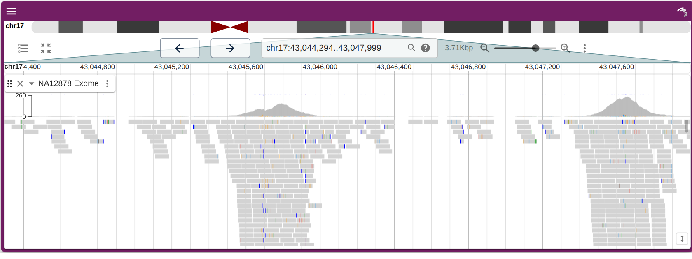
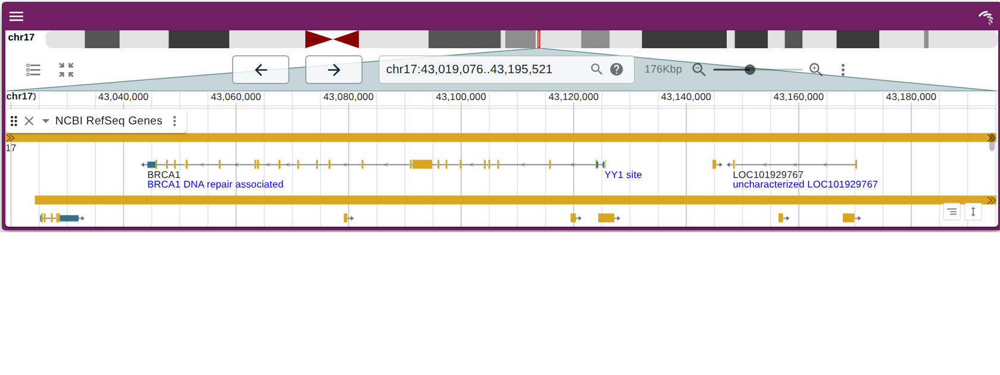
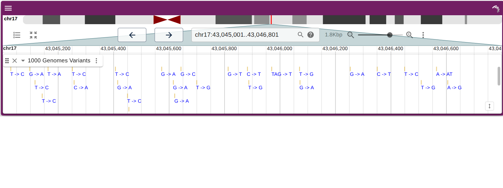
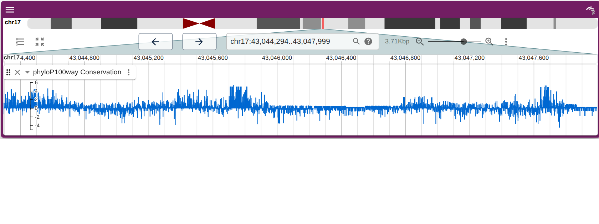
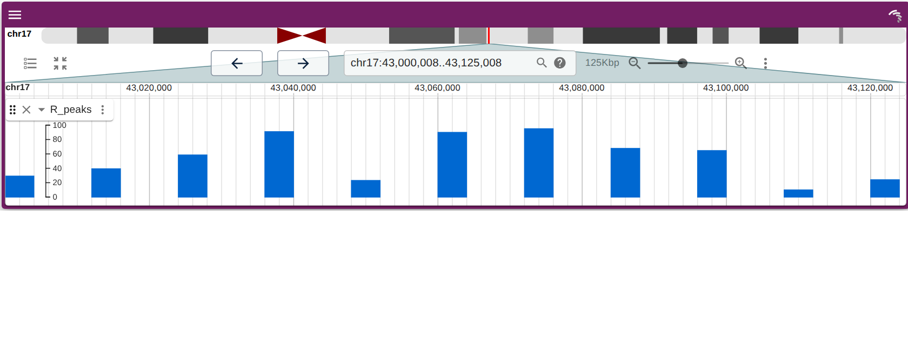
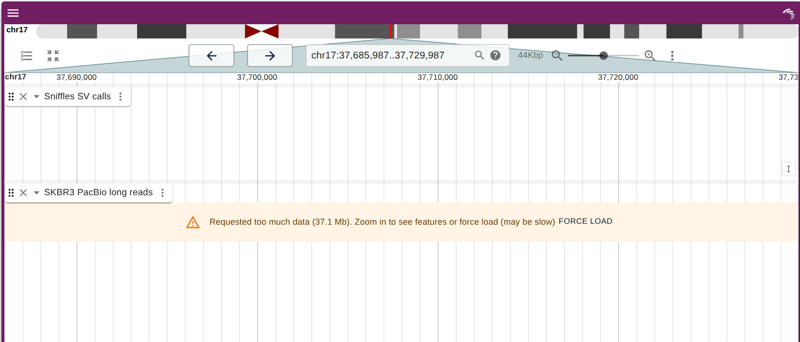
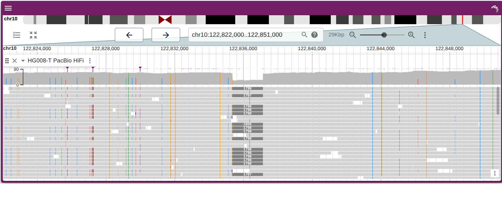

JBrowseR renders the JBrowse 2 linear genome view as an htmlwidget. JBrowse 2 is a fast, GPU-accelerated genome browser; JBrowseR lets you drive it entirely from R and embed it in R Markdown documents, Shiny apps, or the interactive console.
The API is declarative. You describe the browser with plain values — a genome, a list of tracks, a location — and helper constructors assemble the config. You never build JSON by hand.
The fastest way in is to name a genome hub hosted at jbrowse.org. This gives you the assembly, reference-name aliases, cytobands, and gene-name search with no further setup:
JBrowseR("hg38", location = "BRCA1")location accepts a region string like
"chr1:1-10000" or, because the hub ships a search index, a
gene name like "BRCA1". Other hubs work the same way —
"hg19", "mm10", or a GenArk accession such as
"GCF_000001405.40".
Add tracks by URL with track(). The track type and its
index files (.bai/.crai/.tbi) are
inferred from the file extension, so a data URL is usually all you need.
tracks() gathers several together.
JBrowseR(
"hg38",
tracks = tracks(
track(
"https://jbrowse.org/genomes/GRCh38/alignments/NA12878/NA12878.alt_bwamem_GRCh38DH.20150826.CEU.exome.cram",
name = "NA12878 Exome"
)
),
location = "17:43,044,295..43,048,000"
)
Recognized extensions cover the common genomics types:
| Extension | Track | Adapter |
|---|---|---|
.bam, .cram
|
alignments |
BamAdapter, CramAdapter
|
.vcf.gz |
variants | VcfTabixAdapter |
.gff.gz, .gff3.gz, .gtf.gz,
.bed.gz
|
features |
Gff3TabixAdapter, GtfTabixAdapter,
BedTabixAdapter
|
.bb, .bigBed
|
features | BigBedAdapter |
.bw, .bigWig
|
quantitative | BigWigAdapter |
.hic |
Hi-C contact matrix | HicAdapter |
The list isn’t hard-coded in R — the view infers the adapter with
JBrowse’s own format plugins, so any format a bundled plugin recognizes
works. Anything the inference gets wrong, or a track needing a specific
adapter, is a plain config list (the full JBrowse track JSON); extra
arguments to track() (e.g.
type = "AlignmentsTrack") ride onto the track and override
the inferred defaults.
When you only need the defaults, a bare URL string is a track —
track() is just the same thing with room for
name= and extra config. So a whole browser can skip the
constructor entirely:
JBrowseR(
"hg38",
tracks = list(
"https://hgdownload.soe.ucsc.edu/goldenPath/hg38/phyloP100way/hg38.phyloP100way.bw",
"https://s3.amazonaws.com/jbrowse.org/genomes/GRCh38/ncbi_refseq/GCA_000001405.15_GRCh38_full_analysis_set.refseq_annotation.sorted.gff.gz"
),
location = "BRCA1"
)Index files (.bai/.crai/.tbi)
default to the conventional sibling of the data URL. When yours lives
elsewhere — or is a .csi index — name it with
index=, or as the second element of a
c(url, index) pair in tracks:
track("https://example.com/reads.bam", index = "https://example.com/reads.bai")Genes. A gene annotation track over the hub assembly, navigated by name.
JBrowseR(
"hg38",
tracks = tracks(track(
"https://s3.amazonaws.com/jbrowse.org/genomes/GRCh38/ncbi_refseq/GCA_000001405.15_GRCh38_full_analysis_set.refseq_annotation.sorted.gff.gz",
name = "NCBI RefSeq Genes"
)),
location = "BRCA1"
)
Variants. A 1000 Genomes VCF.
JBrowseR(
"hg38",
tracks = tracks(track(
"https://jbrowse.org/genomes/GRCh38/variants/ALL.wgs.shapeit2_integrated_snvindels_v2a.GRCh38.27022019.sites.vcf.gz",
name = "1000 Genomes Variants"
)),
location = "17:43,045,000..43,046,800"
)
Quantitative. A phyloP conservation bigWig.
JBrowseR(
"hg38",
tracks = tracks(track(
"https://hgdownload.soe.ucsc.edu/goldenPath/hg38/phyloP100way/hg38.phyloP100way.bw",
name = "phyloP100way Conservation"
)),
location = "17:43,044,295..43,048,000"
)
Your R results. Turn a data frame of features into a
track with track_data_frame() — no files and no web server.
Any score column makes it a quantitative track.
peaks <- data.frame(
chrom = "17",
start = seq(43000000, 43120000, by = 12000),
end = seq(43000000, 43120000, by = 12000) + 4000,
name = paste0("peak", 1:11),
score = round(runif(11, 5, 100))
)
JBrowseR(
"hg38",
tracks = list(track_data_frame(peaks, "R_peaks")),
location = "17:43,000,000..43,125,000"
)
Cancer structural variants. The SKBR3 breast-cancer cell line has a heavily rearranged genome. PacBio long reads span breakpoints short reads cannot, and Sniffles calls the structural variants from them.
JBrowseR(
"hg19",
tracks = tracks(
track(
"https://jbrowse.org/genomes/hg19/SKBR3/reads_lr_skbr3.fa_ngmlr-0.2.3_mapped.bam.sniffles1kb_auto_l8_s5_noalt.filtered.vcf.gz",
name = "Sniffles SV calls"
),
track(
"https://s3.amazonaws.com/jbrowse.org/genomes/hg19/skbr3/reads_lr_skbr3.fa_ngmlr-0.2.3_mapped.down.bam",
name = "SKBR3 PacBio long reads"
)
),
location = "17:37,686,000..37,730,000"
)
A somatic deletion. HG008-T is a tumor reference sample; its PacBio HiFi reads carry a ~1.8 kb somatic deletion in CUZD1, visible as a clean drop-out spanning many reads.
JBrowseR(
"hg38",
tracks = tracks(track(
"https://jbrowse.org/demos/cgiab/HG008-T_chr10_CUZD1_deletion.bam",
name = "HG008-T PacBio HiFi"
)),
location = "10:122,822,000..122,851,000"
)
A custom theme. theme() recolors the
browser.
JBrowseR(
"hg38",
tracks = tracks(track(
"https://s3.amazonaws.com/jbrowse.org/genomes/GRCh38/ncbi_refseq/GCA_000001405.15_GRCh38_full_analysis_set.refseq_annotation.sorted.gff.gz",
name = "NCBI RefSeq Genes"
)),
theme = theme("#311b92", "#0097a7"),
location = "BRCA1"
)config escape hatch.JBrowseROutput() and
renderJBrowseR(), and read the selected feature back with
input$selectedFeature.